Blueprint and C++ friendly grappling hook physics with options exposed cleanly in the Details panel, and everything tunable across C++, Blueprints, and Details panels. Swing around corners with WASD steering, pull across arenas, and render a live sagging rope tether.
/Grapple/Examples/Maps/GrappleDemo and press Play (PIE). All functionality will work out of the box in the demo for testing.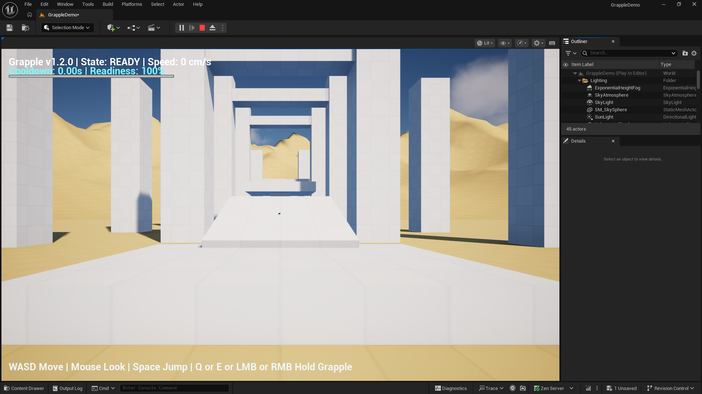
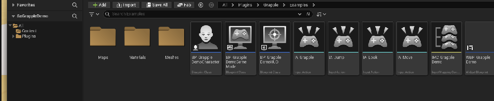
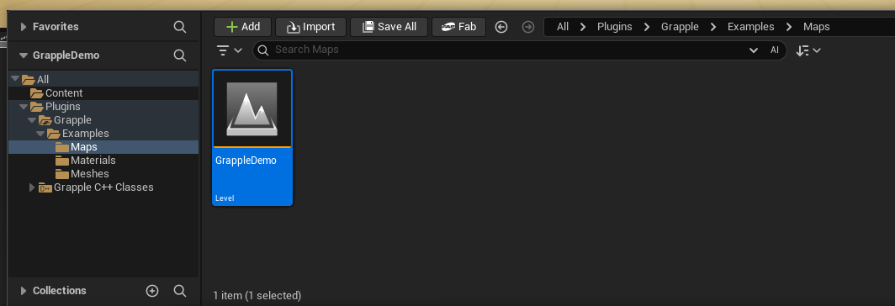
| Input | Action |
|---|---|
WASD / Mouse | Move, steer your pendulum swing in mid-air, and look around |
SpaceBar | Jump off the ground before launching your grapple |
Q / E / LMB / RMB (Hold) | Fire the grapple toward your crosshair, hold to swing and pull, release to detach |
Copy Grapple into Plugins/, enable it, and drag Grapple onto your ACharacter.
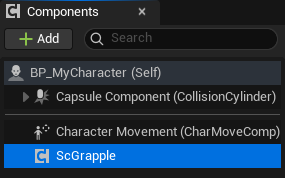
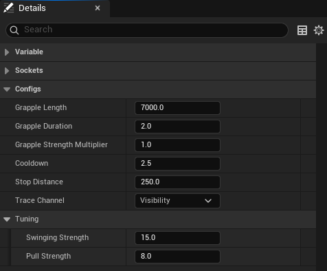
Drag in Grapple Camera FX to lean camera roll and widen FOV smoothly while swinging.
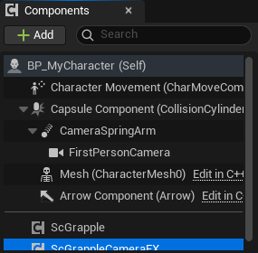
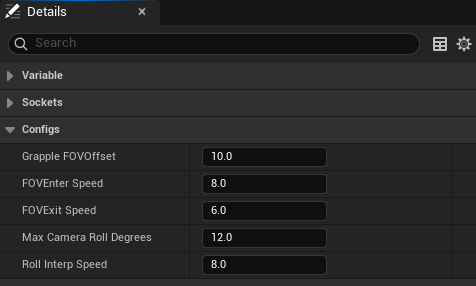
Assign IA_Grapple in Details, or wire your grapple input to Try Enter Grapple and Exit Grapple.
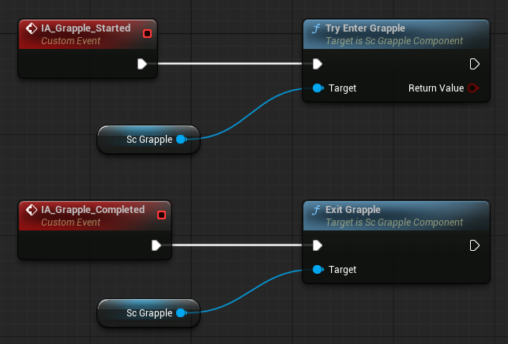
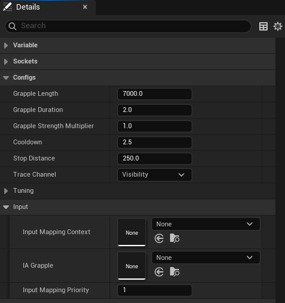
Your players can now latch, pull, and swing consistently at any framerate. Everything below lets you spawn the live tether rope spline, customize audio/FX events, and polish HUD cooldown meters.
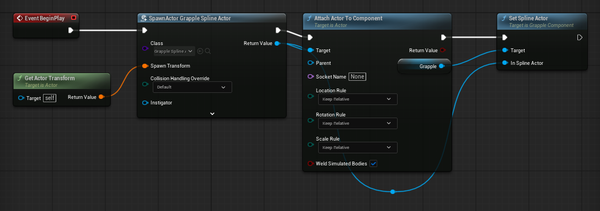
Spawn AGrappleSplineActor, attach it to your character, and pass it into SetSplineActor so the rope renders automatically on every shot.
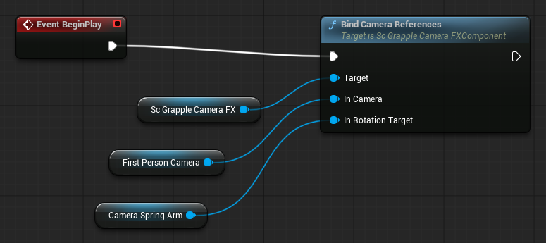
Use BindCameraReferences when your character has multiple camera rigs.
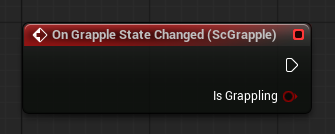
Broadcasts true on latch and false on release.
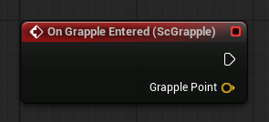
Provides the exact world anchor coordinates on attach.
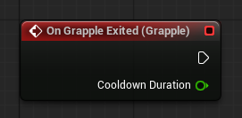
Reports cooldown duration when the grapple detaches.
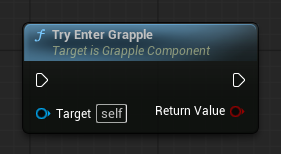
Ray-casts along view direction and latches onto targets.
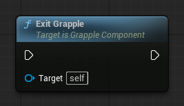
Releases tether, hides rope, and starts cooldown.
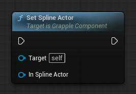
Registers any rope or custom IGrappleSplineContract actor.
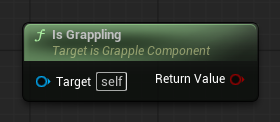
Returns true while tethered.
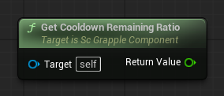
Normalized [0..1] cooldown progress for HUD rings.
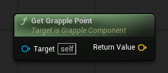
Returns current anchor coordinates in world space.
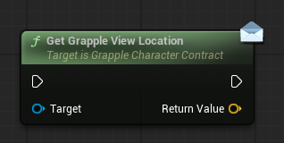
Supply custom eye origin, aim forward, or swing input.
This table highlights the primary entry points. Additional properties, helper functions, Blueprint nodes, and native C++ APIs are available in Unreal Editor Details panels, Blueprint context menus, and the plugin C++ headers.
| Name | Type | Inputs / Outputs | Functionality |
|---|---|---|---|
UGrappleComponent | Component | In: Owner ACharacterIn: IA_Grapple | Handles anchor traces, exponential pull + swing forces, auto-release, and cooldown timers |
UGrappleCameraFXComponent | Component | In: Camera / SpringArmIn: Profile tunables | Smoothly tilts camera roll toward the tether and expands FOV while airborne |
AGrappleSplineActor / CalculateSpline | Actor / Callable | In: TargetLocationLocalIn: PlayerVelocityLocal | Procedural sag-curved rope mesh updated seamlessly from attach to release |
TryEnterGrapple / ExitGrapple | Callable | Return: bool bAttached | Launches aim trace to latch onto valid geometry, or detaches and arms cooldown |
TrySetGrapple / ComputeGrappleForces | Callable | Out: OutImpactPointReturn: FVector / bool | Runs view raycasts and computes radial pull + WASD perpendicular swing impulses |
SetSplineActor / BindCameraReferences | Callable | In: SplineActorIn: Camera, Target | Connects custom tether rope actors and explicit camera/spring-arm rigs |
IsGrappling / IsOnCooldown / GetCooldownRemainingRatio / GetGrapplePoint | Pure | Return: bool / float / FVector | Inspect tether state, [0..1] readiness for crosshair tinting, and anchor position |
VectorFrameRateCorrection | Pure | In: BaseImpulse, DeltaTimeReturn: FVector | Keeps pull and swing arc distances identical across any frame rate |
OnGrappleStateChanged / OnGrappleEntered / OnGrappleExited | Events | Out: bIsGrapplingOut: GrapplePoint / Cooldown | Fires hook attach sparks, rope tension loops, and detach wind-down cues |
IGrappleCharacterContract / IGrappleSplineContract / IGrappleListener | Interfaces | Return: ViewLocation / AimOut: Lifecycle events | Clean extension points for custom character rigs, rope visuals, and external listeners |
Read the screenshot-free Detailed Documentation (also bundled offline in DetailedDocs.html next to this User Guide).